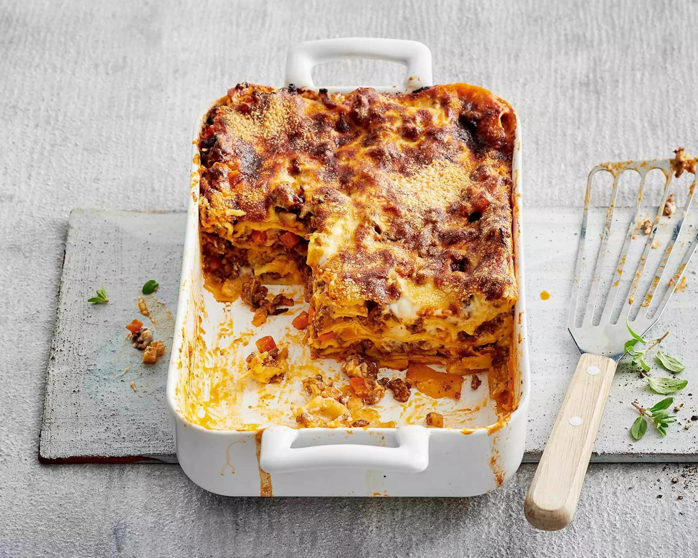

Lasagne
Zutaten für 4 Personen
- 1 Zwiebel, fein gehackt
- 1 Knoblauchzehe, gepresst
- 2 EL Öl
- 400 g Rindshackfleisch
- 2 EL Tomatenpüree
- 1 Dose Pelati (gehackte Tomaten, ca. 400 g)
- 1 TL Salz, Pfeffer
- 1 TL Oregano, getrocknet
- 8 Lasagneblätter
- 40 g Butter
- 40 g Mehl
- 5 dl Milch
- 50 g geriebener Käse
Zubereitung
- Zwiebel und Knoblauch im Öl andämpfen, Hackfleisch beigeben und anbraten.
- Tomatenpüree beigeben, kurz mitdünsten, Pelati dazugeben, würzen und 10 Min. köcheln lassen.
- Butter in einer Pfanne schmelzen, Mehl beigeben, unter Rühren dünsten, Milch unter ständigem Rühren dazugiessen, 5 Min. köcheln lassen, mit Salz und Pfeffer würzen.
- Lasagneform einfetten. Eine Schicht Béchamelsauce, dann Lasagneblätter, Fleischsauce und so weiter schichten. Mit Béchamel und Käse abschliessen.
- In der Mitte des auf 200 °C vorgeheizten Ofens ca. 35–40 Min. backen.
Tipp
Lasagne lässt sich gut vorbereiten und sogar einfrieren. Vor dem Backen vollständig auftauen lassen.